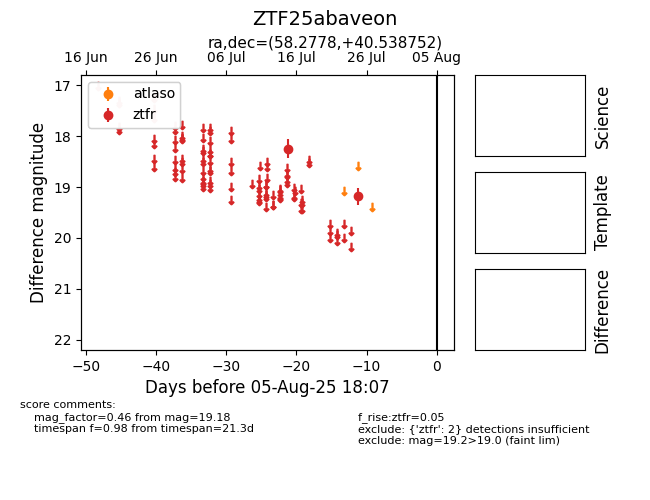

Target ZTF25abaveon at 2025-08-05 18:07, see:
FINK: fink-portal.org/ZTF25abaveon
Lasair: lasair-ztf.lsst.ac.uk/objects/ZTF25abaveon
ALeRCE: alerce.online/object/ZTF25abaveon
alt names
ZTF25abaveon (ztf,fink)
coordinates:
equatorial (ra, dec) = (58.2778,+40.53875)
galactic (l, b) = (156.3065,-10.27557)
photometry
last ztfr=19.18
2 ztfr detections
